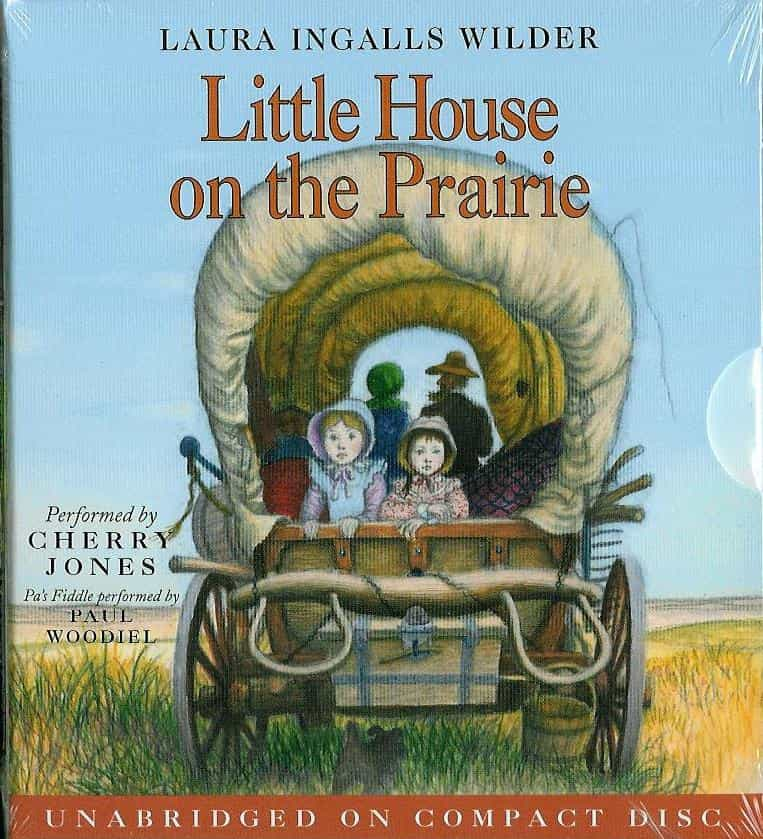

This account syndicates news from other media outlets.


An iconic author’s name has been stripped from a prestigious literary award because of themes some are describing as racially offensive.
Laura Ingalls Wilder is one of the best-known children’s authors. Her “Little House on the Prairie series” is world-renowned for its portrayal of the struggles of prairie life in North America in the 1800’s.
Despite the tremendous success of the semiautobiographical series, the Chicago-based American Library Association over the weekend decided to rescind Wilder’s Medal for Excellence in Children’s literature, a prestigious designation in the children’s literary world.
Director of the ALA looks like how’d you expect
“Her works reflect dated cultural attitudes toward Indigenous people and people of color,” a statement from the Association said.
Describing the series as “period pieces to spark a discussion,” the group is still encouraging people to read the series.
Director of Chicago’s American Indian Center, Heather Miller, said she read the books during childhood, and didn’t see her ethnicity reflected in the stories.
“I absolutely would (read the books again),” Miller said. “But it’s also important to provide the education needed to explain why those words were used and what was happening at that time in history.”
The books, written in the 1930’s, include such titles as “The Long Winter” and “Farmer Boy.”

People from as far away as Australia told CBS 2’s Vince Gerasole Monday that the books impacted their lives in one way or another.
“To me they are just about wholesome living and families working together,” said Louise Tait of Melbourne.
In “Little House on the Prairie,” Wilder wrote, “Their Faces were bold and fierce and terrible.”
Some characters even say, “The only good Indian is a dead Indian.”
The American Library Association knows the books are deeply meaningful to many readers, and they said they are not calling for censorship—just an understanding of the times reflected in the stories.
The award’s name has since been changed to the Children’s Literature Legacy Award.
Don’t Miss: Would The World Be Safer For Women If They Were Declared The Legal Property Of Men?